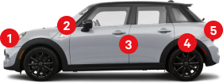

A Vehicle Identification Number (VIN) is like a thumbprint for your car.
It's 17 characters long and contains numbers and letters.
5N1AZ2MG9GN133457

- Under the hood (up front)
- Driver’s side interior dash.
- Driver door jam (opened door)
- Rear wheel wall
-
Under your spare tire in the trunk
- Your VIN can also be found on the following documents:
- Registration, vehicle title, owner’s manual, insurance documents, and
vehicle history reports.